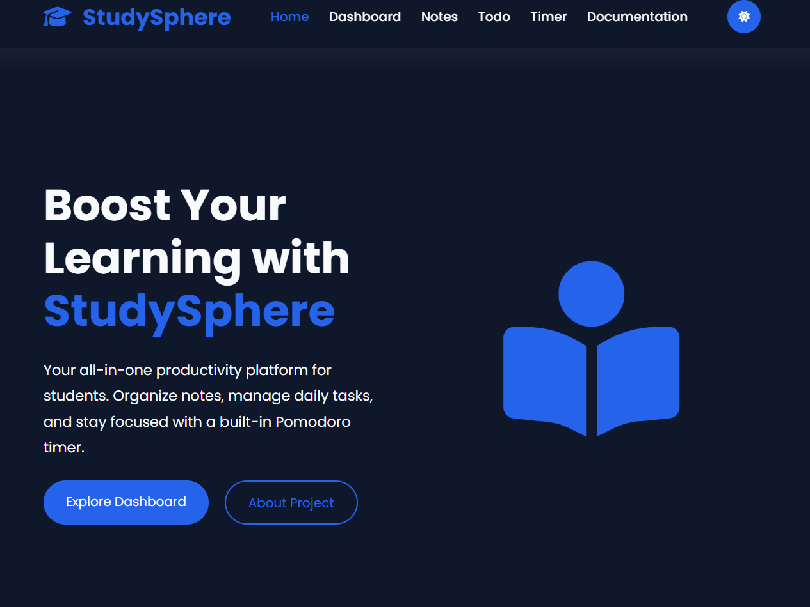
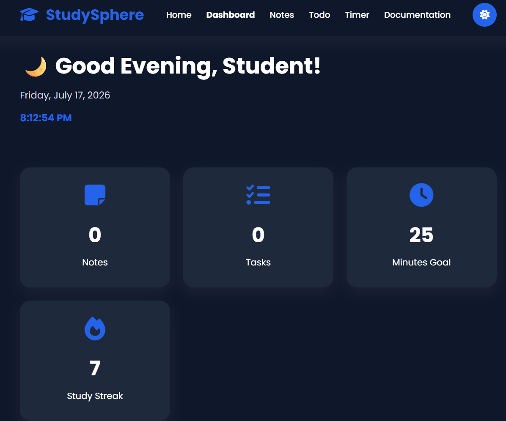
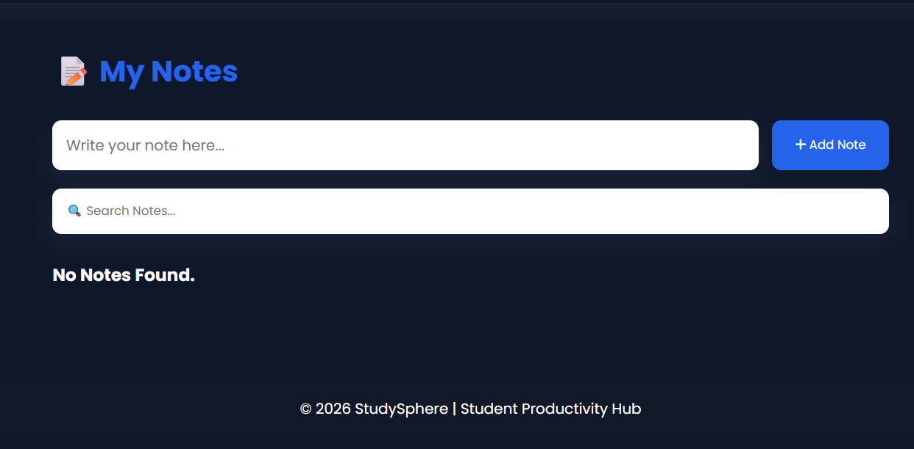
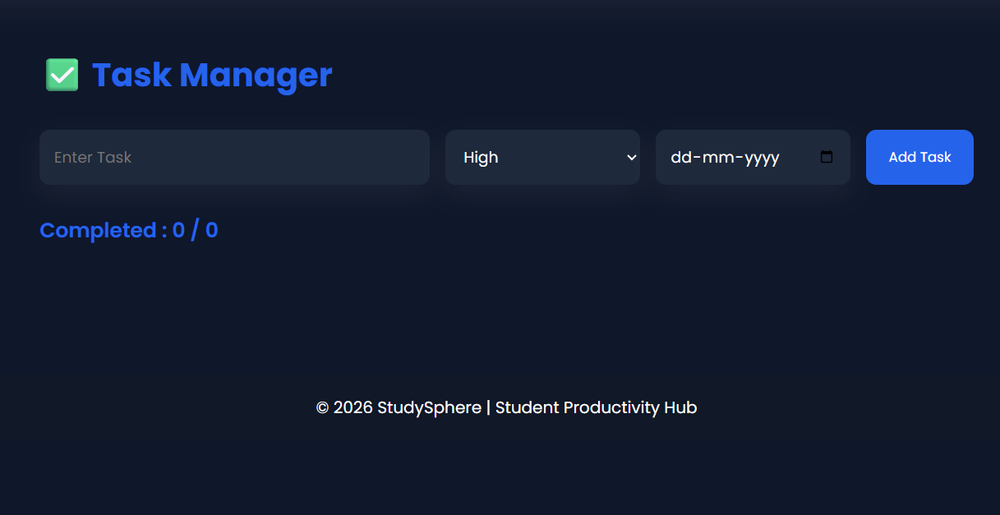
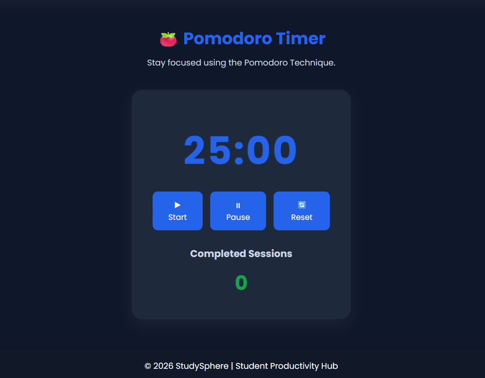

📘 StudySphere Project Documentation
1. Project Overview
Project Title: StudySphere - Student Productivity Hub
Website Category: Educational / Productivity Web Application
Problem Statement:
Students often use multiple applications for notes, task management and study timers. StudySphere combines all these essential tools into one easy-to-use web application.
Why this Project?
We selected this project because students need a single platform to improve productivity, manage daily tasks, organize notes and maintain study discipline using the Pomodoro Technique.
2. Project Description
StudySphere is a responsive student productivity website developed using HTML, CSS, and JavaScript. It combines essential academic tools including a dashboard, notes manager, task manager and Pomodoro timer into one platform. The website helps students organize study materials, track daily tasks, increase focus during study sessions and monitor productivity. The target users are school students, college students and self-learners who want a simple productivity application without installing software. Major features include Local Storage support, responsive design, dark mode, animated user interface, motivational quotes, task management and persistent notes. Future improvements include cloud synchronization, user authentication, reminders, AI-powered study planning, calendar integration and progress analytics.
3. Technology Stack
- HTML5
- CSS3
- JavaScript (ES6)
- Local Storage API
- Google Fonts
- Font Awesome Icons
4. Team Information
| Name | Roll No | Department | Year | |
|---|---|---|---|---|
| shobha c | 1SP23AI055 | AI&ML | 4th Year | shobhapvg26@email.com |
Individual Project: All work was completed independently.
5. Team Contribution
| Member | Contribution |
|---|---|
| shobha c | Homepage, Dashboard, Notes Module, Todo Module, Pomodoro Timer, Documentation, Responsive Design, JavaScript, Testing and Deployment |
6. Challenges Faced
- Designing a fully responsive layout.
- Managing Local Storage across multiple pages.
- Implementing Dark Mode consistently.
- Creating reusable navigation and UI.
- Debugging JavaScript interactions.
These challenges were solved through testing, modular coding and improving the project structure.
7. Learning Outcomes
- Responsive Web Design
- DOM Manipulation
- Event Handling
- Local Storage
- JavaScript ES6
- UI/UX Design
- Git & GitHub
- Vercel Deployment
8. Feedback on Frontend Web Development Training
The Frontend Web Development training provided a strong understanding of HTML, CSS and JavaScript fundamentals through practical learning. The sessions improved our ability to design responsive websites, implement interactive user interfaces and organize projects professionally. Hands-on assignments and mini-projects helped strengthen problem-solving skills and confidence in frontend development. One suggestion is to include additional sessions on advanced JavaScript, API integration and deployment practices. Overall, the training experience was informative, practical and highly beneficial for building real-world projects such as StudySphere.
9. Project Screenshots
Add screenshots before submission.





10. GitHub & Deployment
GitHub Repository: https://github.com/shobhayadav143/studysphere
Vercel Live Link: https://studysphere.vercel.app